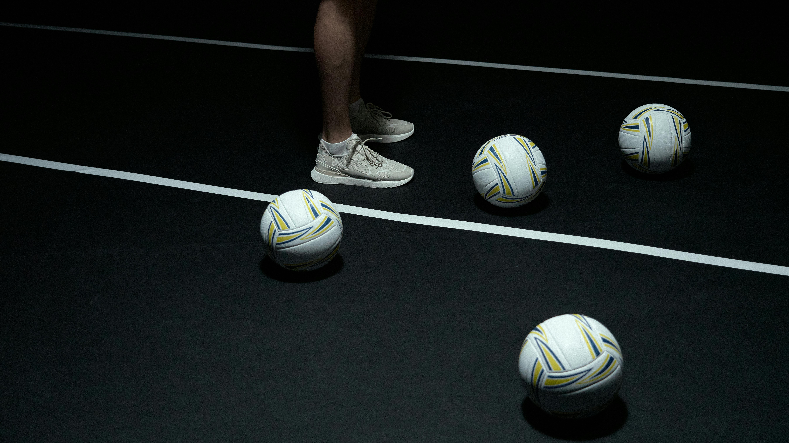
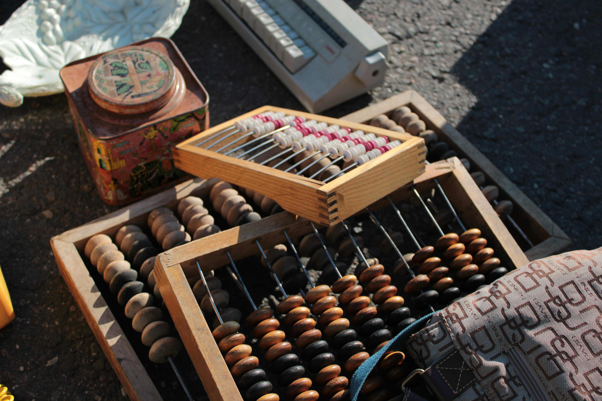

Portfolio
Pour moi, le sport nourrit à la fois le physique et l'esprit

Le sport représente bien plus qu'une simple pratique physique; c'est une opportunité de me divertir et de m'évader de la routine quotidienne. En 2019, j'ai eu l'occasion de participer à des compétitions de tennis et de volley-ball au Club OCP (Office chérifien des phosphates) au Maroc. Ces expériences sportives ont profondément enrichi ma vie. Elles m'ont non seulement permis de maintenir une excellente condition physique, mais elles ont aussi favorisé mon bien-être mental en offrant des moments de détente et de plaisir. Les compétitions ont renforcé ma discipline, ma persévérance et mon esprit d'équipe. De plus, elles m'ont aidé à développer des compétences sociales précieuses, en me permettant de rencontrer de nouvelles personnes et de tisser des liens solides au sein de la communauté sportive. En somme, le sport est devenu un véritable moteur de croissance personnelle et de résilience face aux défis du quotidien.
Calcul mental : le passe-temps célébrale par exellence !

Ma passion profonde pour les mathématiques a été le moteur de mon engagement dans le calcul mental. Fasciné par la logique et la précision des nombres, j'ai consacré du temps et de l'énergie à perfectionner mes compétences dans ce domaine. À travers une pratique régulière et assidue, j'ai acquis un niveau avancé en calcul mental, développant ainsi ma capacité à résoudre rapidement des problèmes complexes et à effectuer des opérations arithmétiques avec aisance et précision. Cette passion m'a non seulement offert une source infinie de défis intellectuels, mais elle m'a également apporté une satisfaction personnelle indéniable en voyant mes compétences progresser au fil du temps.
Les colonnies de vacances : des moments inoubliables de jeux, de découvertes et de rencontres

En 2018-2019, j'ai eu l'opportunité de participer à des colonies de vacances à Agadir et Mohammedia au Maroc. Ces séjours collectifs ont été enrichis par une variété d'activités ludiques, sportives, artistiques et éducatives. Durant ces expériences, j'ai pu non seulement m'amuser et me divertir, mais aussi découvrir de nouvelles passions, développer mes compétences et tisser des liens forts avec d'autres participants. Ces colonies de vacances ont été des moments inoubliables où j'ai pu grandir, apprendre et m'épanouir dans un environnement stimulant et enrichissant.